Cebu trips
Exploring a new place is always exciting but if you only have a day or even half to spare, what do you do? In case you happen to visit Cebu, you can simply choose any of the popular day trips below. You can still have a grand time with your friends and family even with a very tight schedule ahead.
-
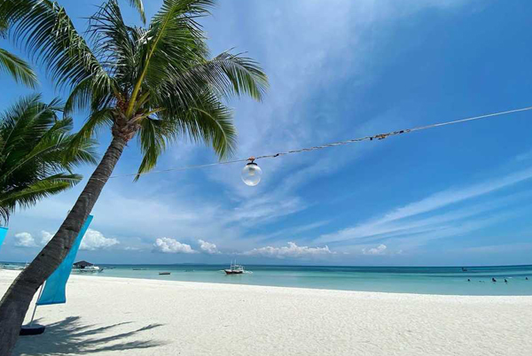
Beaches
Being an island province with more than 150 smaller islands and islets, the province of Cebu is also home to some of the most beautiful beaches in the country. Some of which are hidden gems. While some are very popular with tourists known for their white sands, turquoise waters, and diving spots.
Check destinations
-
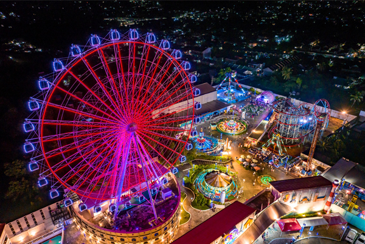
Themed Parks
You've probably pondered why Cebu is one of every tourist's favorite vacation spots when it comes to beaches, falls, lakes, springs, and many more. Undeniably, the city is endowed with rich historic culture and attractions which adds to its tourist charm. At the heart of Visayas' central pillar for commerce, trade, education, and industry, the city has more to offer as the country's second-largest metropolitan area. But, that's not all! Cebu also has the best theme parks and waterparks in the country!
Check destinations
-
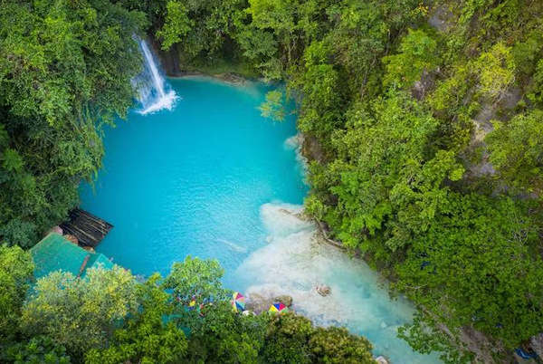
Canyoneering
Cebu is an island known for its beaches, great diving sites, and numerous waterfalls. In Cebu south is a whole new adventure to go downstream canyoneering and jumping off waterfalls. Are you in for a bit of adventure and a lot of amazing nature sceneries?
Check destinations
-
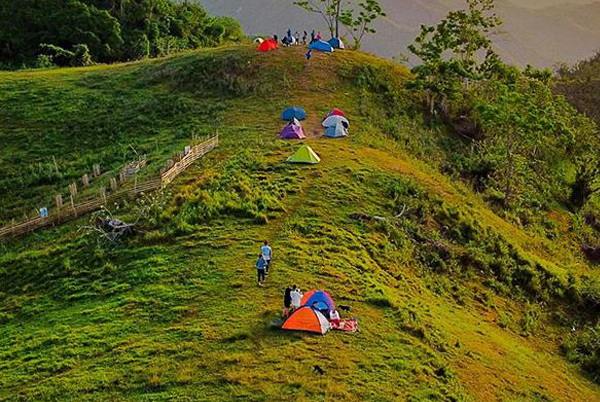
Hiking
The hilly landscape of Cebu lends itself well to hikes. This narrow and slim island—you know what, let’s just call it sexy—spans nearly 200 kilometers from north to south and over 30 kilometers from east to west. With all that space, it is home to some of the most sought-after hiking trails in the country, all of which have breathtaking views that make the climb worth it.
Check destinations
-
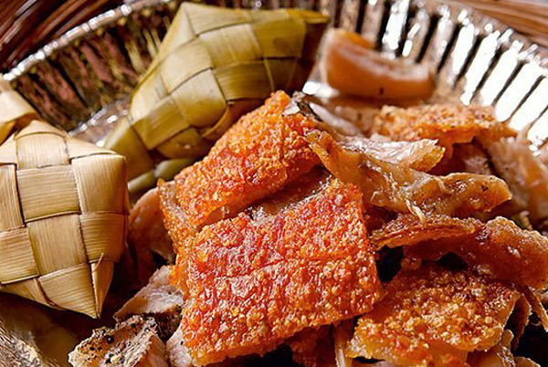
Foods
Cebu is also a food mecca where visitors can taste some of the greatest Philippine cuisines. Cebu is best known for its delicious Lechon, a roasted suckling pig on a pit, and a local snack called the Puso, a heart-shaped delicacy of hanging rice wrapped in coconut fronds. There's also the SuTuKil dining experience, a gastronomic adventure where you can have the seafood cooked according to your preference. It can be prepared as ceviche, grilled, or cooked with broth.
Check destinations
-
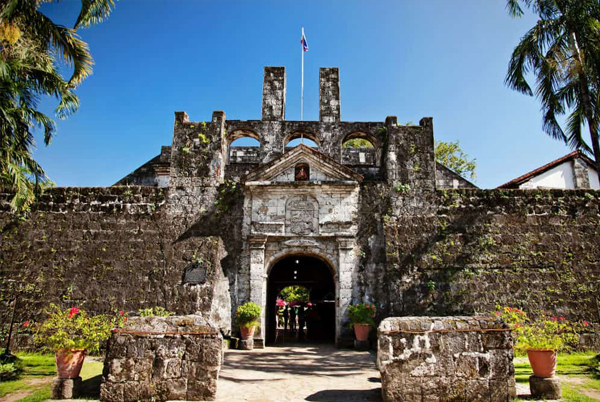
Historical Places
Are you looking to explore the history of Cebu City through the ages? There are a number of historical destinations in Cebu City including the time-honored buildings, monuments, palaces, and parks where you can learn about the glorious past of Cebu City. The presence of these historical sites and museums will take you on a walk through Cebu City ‘s rich history.
Check destinations


 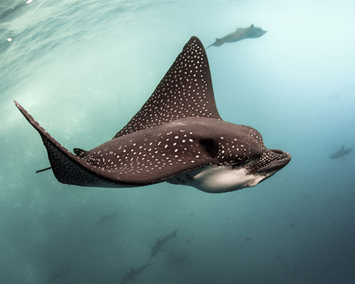
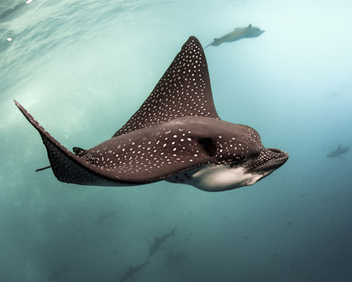
 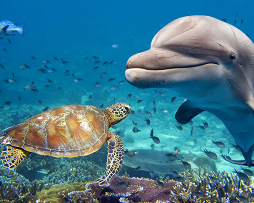
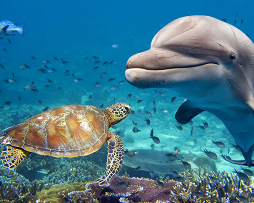
 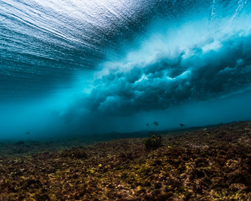
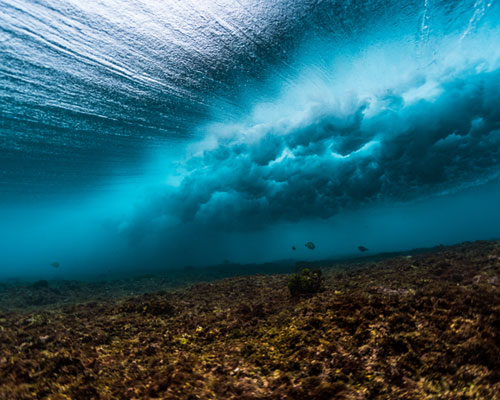

 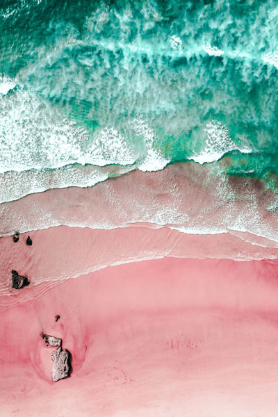
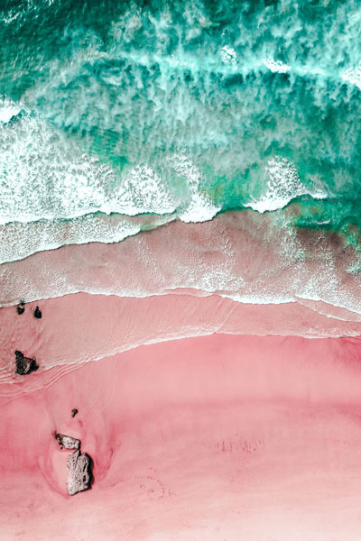
 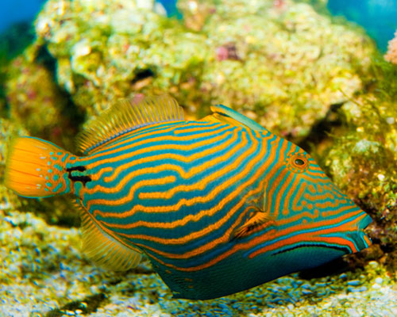
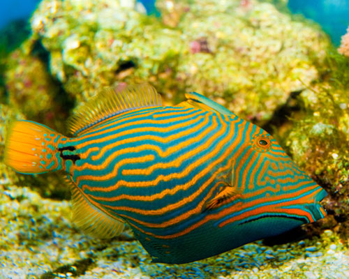

 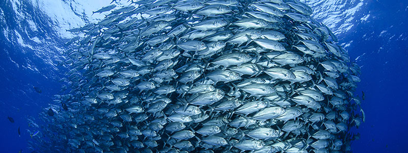
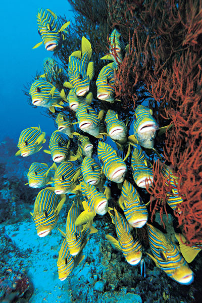
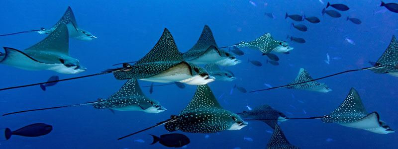
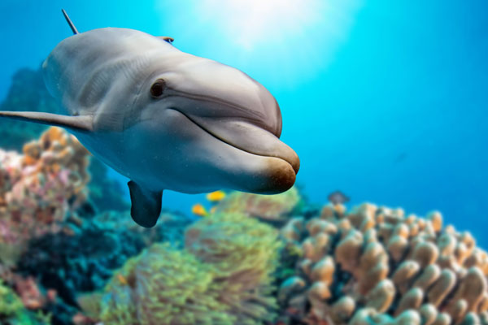
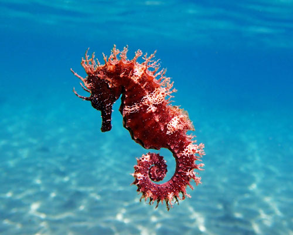
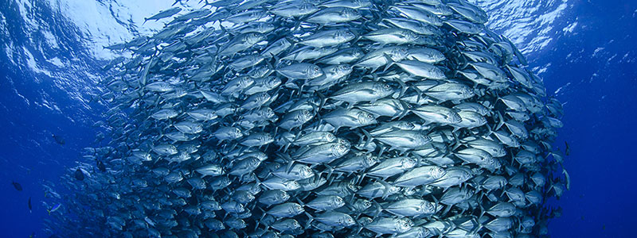
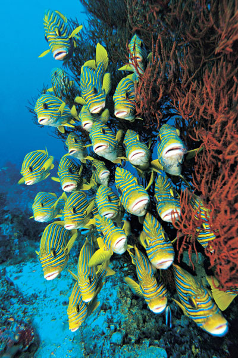
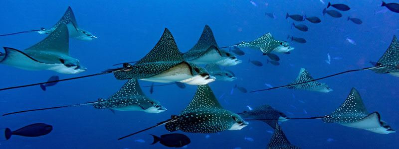
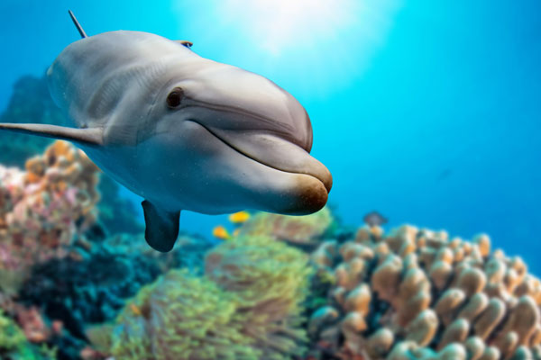
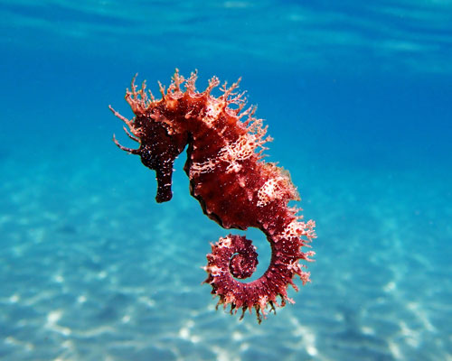